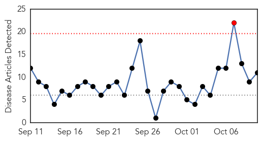
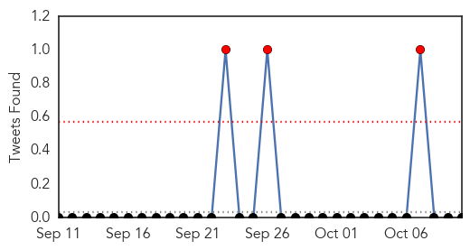
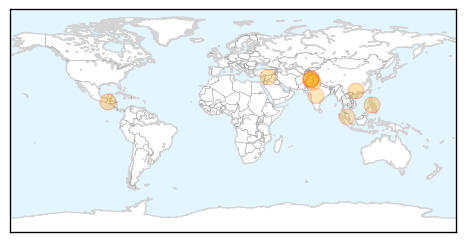
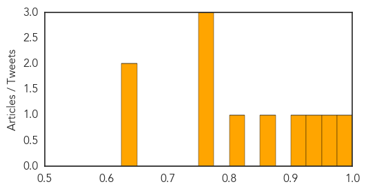

Toggle navigation
Early Warning
Daily Alerts
Dengue Fever
Oct 10, 2014
Compare to:
-
Hemmorhagic Fever
Mold/Fungal Infection
Influenza
Meningitis
Pertussis / Whooping Cough
Middle East Respiratory Syndrome
Cholera
Hepatitis
Chikungunya
Yellow Fever
Bubonic Plague
West Nile Virus
Swine Flu
Ebola
Measles
Unknown
Mumps
30 Day Trends
Web: 1
alerts
, 0
warnings
Twitter: 3
alerts
, 0
warnings
Top Articles:
0.994
Nearly 700 cases of dengue nationally
0.970
Six deaths from China's more ...｜Society｜WCT
0.928
Dengue fever claims four lives in Rawalpindi - Pakistan
0.922
Brgy Guadalupe resident: Typhoid kills 10-year-old
0.856
6 die in dengue virus outbreak in southern China
0.819
Shahbaz launches micro plan to net dengue in Pindi
0.771
Anti-snake venom headache for SCB Medical College
0.758
Government departments urged to speed up anti-dengue efforts
0.754
BUDGET: Dengue test kit reduces clinic dependence on labs for blood tests
0.648
Micro plan devised to tackle dengue
0.628
‘Micro Plan’ devised to implement, monitor dengue control activities
Top Tweets:
No tweets found for Oct 10, 2014
Web/News Articles

Tweets

Article Locations

Article Confidences
